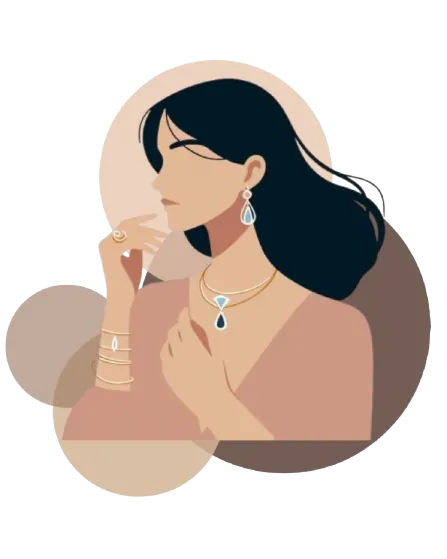
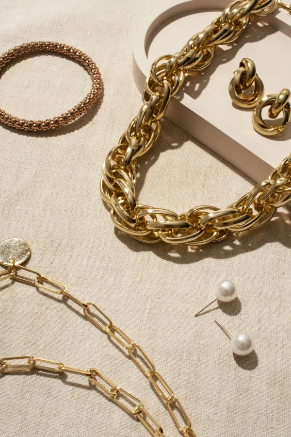

Conheça nossa essência
O legado da nossa história se reflete em cada peça, unindo tradição, elegância e significado.


Um brilho que merecia ser visto
A Éclat nasceu não apenas do desejo de criar joias, mas de reacender um brilho. Nossa inspiração veio de uma empreendedora que guardava nas mãos a maestria e a tradição de peças únicas, mas não tinha os recursos nem a visibilidade para mostrar seu trabalho.
Vimos no esforço dela um brilho silenciado: uma arte que merecia ser celebrada e compartilhada com o mundo. Nosso propósito virou o resgate desse potencial, oferecendo não só uma vitrine, mas uma parceria para florescer.
Cada peça carrega a força desse recomeço, unindo essa paixão com a sofisticação atemporal e o savoir-faire francês. Nossas coleções são uma homenagem ao estilo parisiense e à elegância da Riviera.
Tradição, elegância e significado
Tradição
Técnicas artesanais passadas de geração em geração, com acabamento feito à mão.
Elegância
Design inspirado na alta costura francesa, pensado para durar além das tendências.
Significado
Cada coleção tem um nome e uma história, para que a joia também conte a sua.